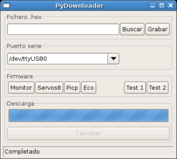
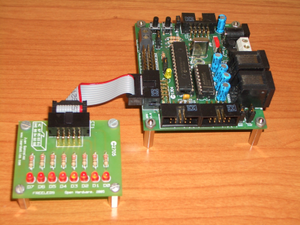

Contenido
[ocultar]Introducción
Breve tutorial sobre el manejo del puerto serie en Linux en lenguaje C++. Los ejemplos utilizan la librería libserial. Yo utilizo el puerto serie para comunicarme con microcontroladores externos y controlar mis robots desde el PC. Aunque nuestro ordenador no disponga de puerto serie, no hay problema. Se pueden utilizar conversores USB-serie.
Los ejemplos de este tutorial se han probado en la distribución de Linux Ubuntu 9.04
Instalación de libserial
Para desarrollar programas que usen la libserial sólo hay que instalar el siguiente paquete:
sudo apt-get install libserial-dev
Compilación
Para compilar los ejemplos, seguir los siguientes pasos:
- Descargar el paquete con los ejemplos: serial-c++-1.0.zip
- Descomprimirlo
- Entrar en el directorio serial-c++-1.0
- Ejecutar make
$ make g++ -Iserial -c -o send_receive.o send_receive.cpp g++ -o send_receive send_receive.o -lserial
Pruebas con el puerto serie
Para probar los ejemplos de este tutorial es necesario tener conectado un dispositivo al puerto serie que nos haga "eco" de todo lo recibido. De esta manera se puede verificar que el software del PC está funcionando correctamente.
Existen varias alternativas:
- Alternativa 1: Utilizar un cable para unir los pines 2 y 3 del puerto serie. Todo lo que se envíe por el pin de transmisión (TX) se recibirá automáticamente por el de recepción (RX).
- Alternativa 2: Utilizar un microcontrolador externo que ejecute un firmware para hacer eco. Esta es la opción que se ha usado para probar los ejemplos de este tutorial. Se ha utilizado la tarjeta Skypic
Pruebas con la tarjeta Skypic
- Tarjeta Skypic, conectada al PC por medio de un cable serie o conversor USB-serie
- El firmware grabado es el Servidor de eco
- Si se conecta la tarjeta Freeleds al puerto B de la Skypic, se podrá ver en binario todo lo que se ha recibido.
- La Skypic se configura muy fácilmente para este ejemplo ejecutando el programa Pydownloader-wx y pulsando el botón de "ECO", que descarga automáticamente el servidor de eco.
|  Pantallazo del programa Pydownloader. Pulsar el botón de ECO para descargar el firmware necesario para este tutorial |
 La tarjeta Freeleds conectada a la Skypic para hacer ejecutar los programas de este tutorial |


Puerto serie y Linux
Los nombres que se dan en Linux a los dispositivos serie son:
| Nombre del dispositivo | Descripción |
|---|---|
| /dev/ttyS0 | Primer puerto serie nativo. (Equivalente a COM1 en Windows) |
| /dev/ttyS1 | Segundo puerto serie nativo. (Equivalente a COM2 en Windows) |
| /dev/ttySnn | n-ésimo puerto serie nativo |
| /dev/ttyUSB0 | Conversor USB-serie 1 |
| /dev/ttyUSB1 | Conversor USB-serie 2 |
| /dev/ttyUSBnn | n-ésimo conversor USB-serie |
| /dev/rfcommn | n-ésimo puerto serie por bluetooth |
Descarga de los ejemplos
| serial-c++-1.0.zip | Fuentes de los ejemplos |
Ejemplo 1: enviar/recibir cadenas
Código fuente
| send_receive.cpp | Fuentes del ejemplo, en el SVN |
Ejecución
Este ejemplo envía la cadena "ASCII Command test" por el puerto serie a la velocidad de 9600 baudios y espera recibir una cadena de respuesta.
Si se ha conectado un dispositivo que haga eco, el ejecutar este ejemplo se obtendrá:
$ ./send_receive /dev/ttyUSB0 Serial port: /dev/ttyUSB0 Opening... String sent------> ASCII Command test String received: ASCII Command test
Si no hay eco la salida será la siguiente:
$ ./send_receive /dev/ttyUSB0 Serial port: /dev/ttyUSB0 Opening... String sent------> ASCII Command test String received: TIMEOUT!
Explicación
Sólo se explicarán algunos fragmentos del código. Primero se crea un objeto de la clase SerialPort pasando como argumento el nombre del dispositivo serie y luego se invoca el método Open especificando los parámetros de configuración:
SerialPort serial_port(argv[1]);
serial_port.Open(SerialPort::BAUD_9600,
SerialPort::CHAR_SIZE_8,
SerialPort::PARITY_NONE,
SerialPort::STOP_BITS_1,
SerialPort::FLOW_CONTROL_NONE);
En caso de error saltará la excepción SerialPort::OpenFailed.
Luego se envía la cadena definida en la constante CMD:
serial_port.Write(CMD);
A continuación se queda esperando a recibir la cadena completa. Los datos recibidos se almacenan en un buffer de tipo SerialPort::DataBuffer (que es un vector de unsigned char):
SerialPort::DataBuffer buffer; serial_port.Read(buffer,CMD.size(),500);
El método Read se queda esperando a recibir CMD.size() bytes. Se especifica un TIMEOUT de 500ms. Si en ese tiempo no se ha recibido ningún carácter entonces se lanzará la excepción SerialPort::ReadTimeout.
Finalmente se muestra por pantalla los caracteres recibidos y se cierra el puerto serie:
for(int ii=0; ii < buffer.size(); ii++) {
cout << buffer[ii];
}
cout << endl;
serial_port.Close();
Licencia
| |
| |
Autor
Enlaces
- Tutorial:Puerto serie en Linux. Programación del puerto serie en linux en lenguaje C.
- Comunicaciones serie (Hw)
- Comunicaciones serie con Python
- Módulo consola_io para acceso al teclado (lenguaje C, Linux)
- Cuadernos Técnicos
- LibSerial: Biblioteca para acceso al puerto serie en C++, para sistemas POSIX
Repositorio
- SVN del proyecto http://svn.iearobotics.com/serial/serial-c++-1.0/
Para obtener la última versión del SVN:
svn co http://svn.iearobotics.com/serial/serial-c++-1.0/
Noticias
- 14/Julio/2010: Comenzada esta página